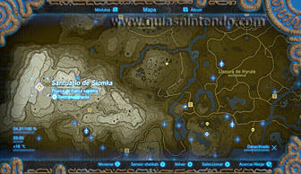
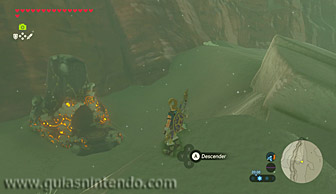
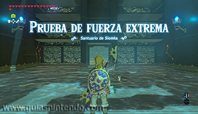
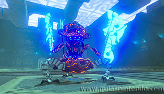
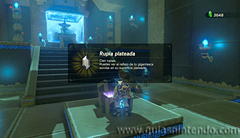

Se encuentra en la región de la torre de Gerudo, al oeste de la cordillera de Gerudo (al norte de la estepa de Isork y al este del monte Agatt).

Dentro del santuario debes derrotar a un miniguardián 4.0. Es el más poderoso de los miniguardianes que vas a encontrar en los santuarios de esta región.

Después de derrotarlo dirígete al altar y en el camino podrás abrir un cofre que contiene una rupia plateada. Cuando llegues al altar podrás examinarlo para obtener un símbolo de valía.
